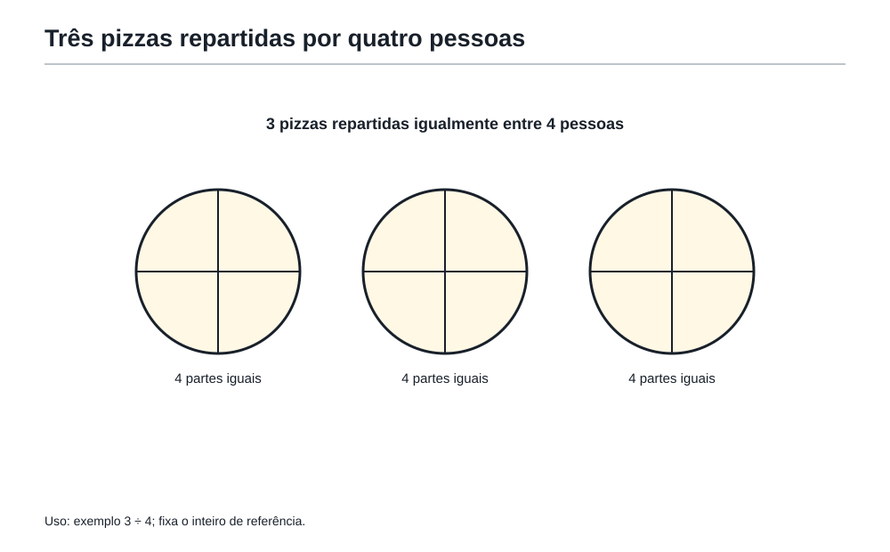
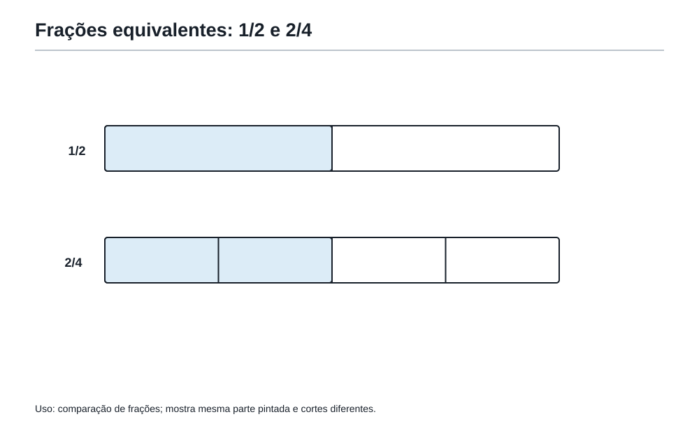
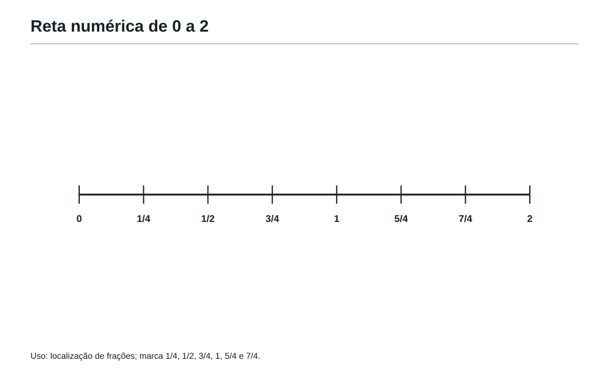
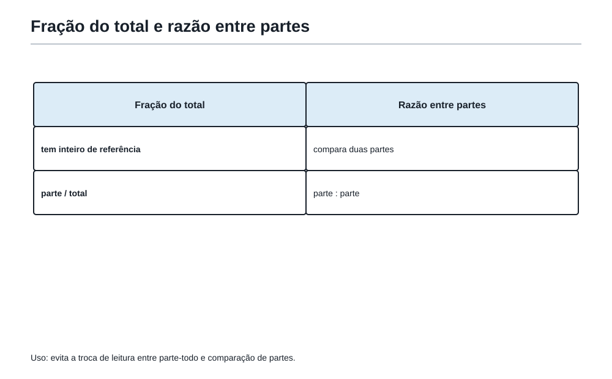

Quando a divisão não termina
1. Depois dos divisores e dos reencontros
A última sala da Academia tinha deixado uma pergunta acesa no quadro:
Quando a divisão não é perfeita, que tipo de número nasce?
Felipe ainda pensava nos problemas de caixas, lanternas, robôs e ciclos.
Quando a pergunta era dividir sem sobrar, apareciam os divisores comuns.
Quando a pergunta era reencontrar ciclos, apareciam os múltiplos comuns.
Mas agora o Professor colocou uma situação diferente sobre a mesa.
— Imagine que quatro estudantes querem dividir igualmente três pizzas.
A coruja, empoleirada na estante da Academia, inclinou a cabeça.
— Não dá para cada estudante receber uma pizza inteira.
Felipe respondeu:
— Então sobra.
O Professor sorriu.
— Sobra se você insistir em contar só pizzas inteiras. Mas a matemática não para quando o inteiro acaba.
A pergunta mudou.
Não era mais:
Quantas pizzas inteiras cada um recebe?
Era:
Que quantidade de pizza cada um recebe?
Essa pequena mudança abre uma sala enorme da Academia.
A sala das frações.
2. Quando dividir ainda faz sentido
Pense no problema:
Três pizzas iguais serão divididas igualmente entre quatro estudantes.
Quanto cada estudante recebe?
Se fossem quatro pizzas para quatro estudantes, cada um receberia uma pizza.
Se fossem oito pizzas para quatro estudantes, cada um receberia duas pizzas.
Mas são três pizzas para quatro estudantes.
A divisão 3 ÷ 4 não dá um número inteiro.
Mesmo assim, a situação existe.
As pizzas podem ser cortadas.
Cada estudante pode receber a mesma quantidade.
A resposta não precisa ser um inteiro.
O Professor desenhou três círculos no quadro e cortou cada um em quatro partes iguais.
Cada pizza virou quatro quartos.
Três pizzas viraram doze quartos.
Dividindo doze quartos entre quatro estudantes, cada estudante recebe três quartos.
A resposta é:
3/4 de pizza.
A fração apareceu porque a divisão não terminou em número inteiro.
Primeiro nasceu a ideia:
repartir uma quantidade em partes iguais.
Depois aparece o nome:
fração.
3. O pedaço que ainda é número
Uma fração não é um número quebrado.
Essa frase é importante.
A fração pode representar um pedaço de alguma coisa, mas ela continua sendo número.
Ela pode ser comparada, somada, colocada em uma reta, usada em receitas, escalas, mapas e problemas de prova.
Quando dizemos 3/4, estamos dizendo:
o inteiro foi dividido em 4 partes iguais, e estamos olhando para 3 dessas partes.
O denominador mostra em quantas partes iguais o inteiro foi dividido.
O numerador mostra quantas dessas partes estão sendo consideradas.
Mas cuidado: o nome não deve vir antes da ideia.
Antes de decorar “numerador” e “denominador”, o leitor precisa enxergar a situação.
Em 3/4:
- o
4conta o tamanho da linguagem usada: quartos; - o
3conta quantos quartos foram escolhidos.
A fração 3/4 não é “3 e 4 separados”.
É uma única quantidade escrita com dois números.
A Mochila do Matemático ganha uma ferramenta:
Ver a fração como parte de um inteiro.
4. Fração como divisão

Agora olhe para a mesma fração de outro jeito.
3/4 também pode ser lido como:
3 dividido por 4.
Isso significa que fração não é apenas pedaço pintado.
Ela também é divisão.
Se 3 pizzas são divididas por 4 estudantes, cada estudante recebe 3/4 de pizza.
Se 5 metros de fita são divididos igualmente entre 2 pessoas, cada pessoa recebe 5/2 metros.
Se 7 litros de suco são divididos igualmente em 8 garrafas, cada garrafa recebe 7/8 de litro.
A fração guarda a divisão dentro dela.
Por isso, uma fração pode ser menor que 1, igual a 1 ou maior que 1.
3/4 é menor que 1, porque 3 partes de 4 não completam o inteiro.
4/4 é igual a 1, porque 4 quartos completam o inteiro.
5/4 é maior que 1, porque 5 quartos passam de uma pizza inteira.
A coruja perguntou:
— Então 5/4 não é proibido?
— Não — disse Felipe. — É uma pizza inteira e mais um quarto.
O Professor escreveu:
5/4 = 1 + 1/4
A Academia aprovou.
Frações maiores que 1 não são erro.
São quantidades que passaram de um inteiro.
5. A mesma quantidade com roupas diferentes

O Professor colocou duas barras iguais no quadro.
Na primeira, dividiu a barra em 2 partes iguais e pintou 1 parte.
Na segunda, dividiu a barra em 4 partes iguais e pintou 2 partes.
A primeira mostrava 1/2.
A segunda mostrava 2/4.
Felipe olhou um instante.
— A parte pintada é a mesma.
— Exatamente — respondeu o Professor. — A quantidade é a mesma, mas a escrita mudou.
1/2 e 2/4 são frações equivalentes.
Equivalentes não significa “parecidas”.
Significa que representam a mesma quantidade.
Também vale:
1/2 = 3/6 = 4/8 = 5/10
A ideia é simples: se você divide o inteiro em mais partes, cada parte fica menor.
Mas, se você pega mais partes na mesma proporção, a quantidade total pode continuar igual.
Multiplicar numerador e denominador pelo mesmo número muda a roupa da fração, mas não muda a quantidade.
1/2 = 2/4
porque o inteiro foi dividido com uma linguagem mais fina.
A Mochila ganha outra ferramenta:
Reconhecer frações equivalentes.
6. Simplificar não é diminuir
A palavra “simplificar” costuma enganar.
Quando simplificamos 6/8 para 3/4, a quantidade não ficou menor.
A escrita ficou mais simples.
Imagine uma barra dividida em 8 partes iguais, com 6 partes pintadas.
Se juntarmos as partes de duas em duas, a mesma região pintada vira 3 partes de um total de 4.
6/8 = 3/4
A quantidade não mudou.
A escrita ficou mais limpa.
Aqui aparece uma ponte direta com o Capítulo 4.
Para simplificar 18/24, podemos perguntar:
Qual é o maior número que divide 18 e 24 sem sobrar?
Essa pergunta pede MDC.
Os divisores comuns de 18 e 24 incluem 1, 2, 3 e 6.
O maior deles é 6.
Então:
18/24 = (18 ÷ 6)/(24 ÷ 6) = 3/4
A fração 3/4 é a forma simplificada de 18/24.
O MDC não apareceu como fórmula solta.
Ele apareceu porque a pergunta era:
qual é o maior pedaço comum que posso retirar do numerador e do denominador sem mudar a quantidade?
A coruja comentou:
— Então simplificar fração é usar divisor comum com cuidado.
Sim.
E, quando usamos o maior divisor comum, chegamos direto à forma mais simples.
7. Comparar frações sem cair na pressa
Qual é maior?
3/5 ou 2/3?
Um leitor apressado pode pensar:
— 5 é maior que 3, então 3/5 deve ser maior.
Mas o denominador não funciona assim.
O denominador mostra em quantas partes o inteiro foi dividido.
Quanto maior o denominador, menores são as partes, se o inteiro é o mesmo.
Comparar frações exige colocar as duas na mesma linguagem.
Vamos transformar 3/5 e 2/3 em frações com o mesmo denominador.
Os denominadores são 5 e 3.
Um denominador comum simples é 15.
3/5 = 9/15
porque multiplicamos numerador e denominador por 3.
2/3 = 10/15
porque multiplicamos numerador e denominador por 5.
Agora as duas frações estão falando a mesma língua: quinze avos.
9/15 < 10/15
Logo:
3/5 < 2/3
O segredo não foi fazer uma conta grande.
Foi traduzir as duas quantidades para a mesma linguagem.
A Mochila ganha uma ferramenta:
Comparar frações colocando na mesma linguagem.
8. Quando somar frações pede uma linguagem comum
A mesma ideia aparece quando somamos frações.
Imagine que Felipe comeu 1/3 de uma barra de chocolate pela manhã e 1/4 da mesma barra à tarde.
Quanto ele comeu ao todo?
Não podemos dizer simplesmente:
1/3 + 1/4 = 2/7
Essa conta parece tentadora, mas mistura linguagens.
Terços e quartos são pedaços de tamanhos diferentes.
Antes de somar, precisamos colocar tudo na mesma linguagem.
Um inteiro dividido em 12 partes iguais pode mostrar terços e quartos ao mesmo tempo:
1/3 = 4/12
1/4 = 3/12
Então:
1/3 + 1/4 = 4/12 + 3/12 = 7/12
Aqui aparece outra ponte com o Capítulo 4.
Para encontrar uma linguagem comum eficiente, buscamos um múltiplo comum dos denominadores.
O menor múltiplo comum de 3 e 4 é 12.
Por isso, o MMC ajuda a encontrar denominadores comuns.
Mas a ideia vem antes do nome:
para somar partes de tamanhos diferentes, precisamos transformar tudo em partes do mesmo tamanho.
9. Fração na reta: entre inteiros também mora matemática

A fração também mora na reta numérica.
Entre 0 e 1, há muitos números.
1/2 fica exatamente no meio.
1/4 fica antes de 1/2.
3/4 fica depois de 1/2.
E frações maiores que 1 passam do primeiro inteiro:
5/4 fica entre 1 e 2.
Mais exatamente, fica em 1 inteiro e 1 quarto.
A reta ajuda a enxergar três coisas:
- frações são números;
- frações podem ser comparadas;
- frações maiores que 1 não são erro.
Quando um problema pergunta “qual fração está mais próxima de 1?”, a reta pode ser mais útil que uma conta longa.
Por exemplo:
7/8 está a 1/8 de completar 1.
5/6 está a 1/6 de completar 1.
Como 1/8 é menor que 1/6, a fração 7/8 está mais perto de 1.
A conta é pequena porque a ideia veio primeiro.
10. Quando a fração conta uma comparação
Até agora, a fração apareceu como parte e como divisão.
Mas ela também pode aparecer como comparação.
Na sala da Academia há 12 estudantes.
Destes, 8 resolveram o primeiro desafio.
A fração dos estudantes que resolveram o desafio é:
8/12
Essa fração compara uma parte com o total.
Simplificando:
8/12 = 2/3
Então podemos dizer:
Dois terços da turma resolveram o desafio.
Agora pense em outra situação:
Em uma equipe, há 6 meninas e 4 meninos.
A fração de meninas em relação ao total é:
6/10 = 3/5
Mas a razão entre meninas e meninos é:
6/4 = 3/2
São perguntas diferentes.
Uma compara parte com total.
A outra compara um grupo com outro grupo.
Essa diferença é uma das armadilhas mais comuns em problemas.
A pergunta escondida decide tudo:
- fração da turma → parte / total;
- razão entre meninas e meninos → meninas / meninos;
- razão entre meninos e meninas → meninos / meninas.
A ordem importa.
A Mochila ganha uma ferramenta:
Pensar em razão como comparação.
11. A receita que cresce sem mudar de sabor
O Professor trouxe uma receita da cantina da Academia:
Para fazer 2 copos de suco especial, usam-se:
- 3 medidas de água;
- 2 medidas de concentrado.
A razão entre água e concentrado é:
3 : 2
Se a cantina quiser fazer o dobro da receita, usará:
- 6 medidas de água;
- 4 medidas de concentrado.
A razão continua:
6 : 4
Simplificando:
6 : 4 = 3 : 2
O sabor não mudou.
A receita cresceu, mas a relação entre os ingredientes permaneceu igual.
Isso é proporção.
Uma proporção aparece quando duas razões representam a mesma comparação.
3/2 = 6/4 = 9/6 = 12/8
Não é a quantidade absoluta que fica igual.
O que fica igual é a relação.
A coruja resumiu:
— Proporção é quando as quantidades mudam juntas sem mudar a comparação.
Perfeito.
12. O ingrediente escondido
A Academia preparava suco para uma turma maior.
A receita original dizia:
Para 2 medidas de concentrado, use 3 medidas de água.
Agora havia 10 medidas de concentrado.
Quantas medidas de água seriam necessárias para manter o mesmo sabor?
A relação é:
3 medidas de água para 2 medidas de concentrado.
Se o concentrado passou de 2 para 10, ele foi multiplicado por 5.
Então a água também precisa ser multiplicada por 5.
3 × 5 = 15
Serão necessárias 15 medidas de água.
Não foi preciso montar uma fórmula pesada.
Bastou descobrir quanto vale uma parte da comparação e manter a relação.
A Mochila ganha uma ferramenta:
Descobrir quanto vale uma parte em proporções.
Outro exemplo:
Em um mapa, 1 cm representa 4 km.
Uma trilha mede 7 cm no mapa.
Qual é a distância real?
Se 1 cm representa 4 km, então 7 cm representam:
7 × 4 = 28
A distância real é 28 km.
Escalas são proporções disfarçadas.
13. A armadilha do total

Agora vem uma das armadilhas mais importantes.
Em uma turma, a razão entre meninas e meninos é
3 : 2.
Há 25 estudantes ao todo.
Quantas meninas há?
Um leitor apressado pode dizer:
— São 3 meninas.
Mas 3 : 2 não significa que há apenas 3 meninas e 2 meninos.
Significa que, para cada 3 partes de meninas, há 2 partes de meninos.
O total de partes é:
3 + 2 = 5
Essas 5 partes correspondem a 25 estudantes.
Então cada parte vale:
25 ÷ 5 = 5
Meninas:
3 × 5 = 15
Meninos:
2 × 5 = 10
Total:
15 + 10 = 25
A resposta é 15 meninas.
A pergunta escondida era:
quanto vale cada parte?
Em problemas de razão, o total quase nunca é um detalhe decorativo.
Ele costuma dizer quanto vale a soma das partes.
OBMEP14. Problema em estilo OBMEP — A pizza da Academia
Na cantina da Academia, 5 pizzas iguais foram divididas igualmente entre 8 estudantes.
Pergunta: Que fração de pizza cada estudante recebeu?
Pense alguns instantes antes de olhar a solução.
Se quiser, use o caderno para representar as pizzas.
Ver solução
Solução comentada
A pergunta é uma divisão:
5 ÷ 8
Como 5 pizzas serão divididas entre 8 estudantes, cada estudante recebe:
5/8
de pizza.
A resposta é 5/8 de pizza.
Aqui a fração aparece como divisão.
Ver solução
O que a solução precisa mostrar
Não basta escrever 5/8 sem explicar.
Uma solução melhor diz:
Como as 5 pizzas são divididas igualmente entre 8 estudantes, a quantidade de pizza recebida por cada estudante é
5 ÷ 8, ou seja,5/8de pizza.
Essa frase mostra a ligação entre a história e a fração.
OBMEP15. Problema em estilo OBMEP — A receita do bolo dourado
Para fazer 4 bolos dourados, a cantina usa 6 xícaras de farinha.
Pergunta: Quantas xícaras de farinha serão usadas para fazer 10 bolos, mantendo a mesma receita?
Primeira jogada
A família do problema é proporção.
A receita deve crescer sem mudar a relação entre bolos e farinha.
Ver solução
Solução comentada
4 bolos usam 6 xícaras.
Para 2 bolos, metade disso:
6 ÷ 2 = 3
Então 2 bolos usam 3 xícaras.
10 bolos são 5 grupos de 2 bolos.
5 × 3 = 15
Logo, 10 bolos usam 15 xícaras de farinha.
Também poderíamos pensar assim:
De 4 para 10, o fator de crescimento é 10/4 = 5/2.
Então a farinha também é multiplicada por 5/2:
6 × 5/2 = 15
Mas a primeira solução é mais natural para este momento do livro, porque mantém a ideia de partes.
Resposta
Serão usadas 15 xícaras de farinha.
OBMEP16. Problema em estilo OBMEP — As fitas coloridas
Uma fita azul mede 3/4 de metro.
Uma fita vermelha mede 5/6 de metro.
Pergunta: Qual fita é maior e quanto a mais ela mede?
Primeira jogada
As frações têm denominadores diferentes.
Antes de comparar ou subtrair, precisamos colocá-las na mesma linguagem.
Ver solução
Solução comentada
Os denominadores são 4 e 6.
Um denominador comum eficiente é 12.
3/4 = 9/12
5/6 = 10/12
A fita vermelha é maior, pois:
10/12 > 9/12
A diferença é:
10/12 - 9/12 = 1/12
Resposta
A fita vermelha é maior por 1/12 de metro.
Olho da revisão
A resposta precisa dizer a unidade: metro.
Sem unidade, o número fica sem ligação com a história.
OBMEP17. Problema em estilo OBMEP — A turma e as medalhas
Em uma turma da Academia, a razão entre estudantes que ganharam medalha e estudantes que não ganharam medalha é 2 : 3.
Ao todo, há 35 estudantes.
Pergunta: Quantos estudantes ganharam medalha?
Primeira jogada
A razão 2 : 3 não diz diretamente o número de estudantes.
Ela diz a relação entre duas partes.
Ver solução
Solução comentada
As partes são:
- 2 partes com medalha;
- 3 partes sem medalha.
O total de partes é:
2 + 3 = 5
Essas 5 partes correspondem a 35 estudantes.
Cada parte vale:
35 ÷ 5 = 7
Os estudantes com medalha correspondem a 2 partes:
2 × 7 = 14
Resposta
14 estudantes ganharam medalha.
A armadilha evitada
Não era correto responder 2.
O número 2 representa partes da razão, não estudantes diretamente.
OBMEP18. Problema em estilo OBMEP — O mapa da trilha
No mapa da Academia, cada 2 cm representam 5 km na trilha real.
Uma trilha aparece com 14 cm no mapa.
Pergunta: Quantos quilômetros tem a trilha real?
Primeira jogada
É um problema de escala, portanto é uma proporção.
Ver solução
Solução comentada
2 cm no mapa representam 5 km reais.
14 cm é 7 vezes 2 cm.
Então a distância real também será 7 vezes 5 km.
7 × 5 = 35
Resposta
A trilha real tem 35 km.
Outra forma de ver
Se 2 cm representam 5 km, então 1 cm representa 5/2 km, isto é, 2,5 km.
Para 14 cm:
14 × 2,5 = 35
As duas formas chegam à mesma resposta.
A primeira evita decimal e costuma ser mais confortável.
OBMEP19. Problema em estilo OBMEP — O painel dividido
Um painel retangular da Academia foi dividido em partes iguais.
Felipe pintou 2/5 do painel pela manhã e 1/4 do mesmo painel à tarde.
Pergunta: Que fração do painel foi pintada ao todo?
Primeira jogada
As frações se referem ao mesmo inteiro: o painel inteiro.
Mas os denominadores são diferentes.
Precisamos de uma linguagem comum.
Ver solução
Solução comentada
Os denominadores são 5 e 4.
O menor múltiplo comum de 5 e 4 é 20.
2/5 = 8/20
1/4 = 5/20
Somando:
8/20 + 5/20 = 13/20
Resposta
Felipe pintou 13/20 do painel.
Por que não 3/9?
Porque quintos e quartos são pedaços de tamanhos diferentes.
Somar numeradores e denominadores diretamente mistura linguagens.
OBMEP20. Problema em estilo OBMEP — A barra misteriosa
Três barras de chocolate iguais foram divididas igualmente entre alguns estudantes.
Cada estudante recebeu 3/8 de uma barra.
Ao todo, foram distribuídas exatamente 3 barras inteiras.
Pergunta: Quantos estudantes receberam chocolate?
Primeira jogada
A pergunta não pede uma fração da barra.
Ela pede quantas vezes a fração 3/8 cabe em 3 inteiros.
Vamos transformar 3 inteiros em oitavos.
Ver solução
Solução comentada
Cada barra inteira tem 8/8.
Três barras inteiras têm:
3 × 8/8 = 24/8
Cada estudante recebe 3/8.
Então o número de estudantes é:
24/8 ÷ 3/8
Isso significa contar quantos grupos de 3 oitavos cabem em 24 oitavos:
24 ÷ 3 = 8
Resposta
8 estudantes receberam chocolate.
O que este problema treina
Ele mostra que fração também pode aparecer em problemas de contagem de partes.
A pergunta escondida era:
quantos grupos de
3/8formam 3 inteiros?
Oficina21. Oficina Olímpica 4 — A mesma quantidade com outro nome
A Oficina Olímpica desta sala não é uma lista de contas mecânicas.
Ela treina leitura, comparação e escolha da ferramenta certa.
Use o caderno se quiser, mas não dependa de espaço impresso.
Desafio 1 — Divisão que vira fração
Sete barras iguais serão divididas igualmente entre quatro estudantes.
Pergunta: Que quantidade de barra cada estudante recebe?
Ver solução
Solução
A situação é:
7 ÷ 4
Logo, cada estudante recebe:
7/4
de barra.
Como 7/4 = 1 + 3/4, cada estudante recebe 1 barra inteira e mais 3/4 de barra.
Desafio 2 — Simplificar sem mudar
Simplifique a fração 24/36.
Ver solução
Solução
A pergunta é: qual é o maior divisor comum de 24 e 36?
O MDC é 12.
Então:
24/36 = (24 ÷ 12)/(36 ÷ 12) = 2/3
A fração simplificada é 2/3.
A quantidade não mudou.
A escrita ficou mais simples.
Desafio 3 — Comparar frações
Qual fração é maior: 4/7 ou 3/5?
Ver solução
Solução
Colocamos as duas na mesma linguagem.
Um denominador comum para 7 e 5 é 35.
4/7 = 20/35
3/5 = 21/35
Logo:
3/5 é maior.
Desafio 4 — Total escondido
A razão entre bolas azuis e bolas vermelhas em uma caixa é 4 : 5.
A caixa tem 63 bolas ao todo.
Pergunta: Quantas bolas vermelhas há?
Ver solução
Solução
A razão tem:
4 + 5 = 9
partes ao todo.
Essas 9 partes correspondem a 63 bolas.
Cada parte vale:
63 ÷ 9 = 7
As bolas vermelhas são 5 partes:
5 × 7 = 35
Há 35 bolas vermelhas.
Desafio 5 — Receita incompleta
Para fazer 6 copos de suco, usam-se 9 colheres de polpa.
Quantas colheres de polpa serão usadas para fazer 10 copos, mantendo a mesma receita?
Ver solução
Solução
6 copos usam 9 colheres.
Dividindo por 3:
2 copos usam 3 colheres.
10 copos são 5 grupos de 2 copos.
5 × 3 = 15
Serão usadas 15 colheres de polpa.
Desafio 6 — Perto de 1
Qual fração está mais perto de 1: 8/9 ou 6/7?
Ver solução
Solução
8/9 falta 1/9 para chegar a 1.
6/7 falta 1/7 para chegar a 1.
Como 1/9 é menor que 1/7, a fração 8/9 está mais perto de 1.
Desafio 7 — Somar com linguagem comum
Calcule com sentido:
1/2 + 2/3
Ver solução
Solução
Os denominadores são 2 e 3.
Uma linguagem comum é sextos.
1/2 = 3/6
2/3 = 4/6
Somando:
3/6 + 4/6 = 7/6
A resposta é 7/6, ou 1 + 1/6.
Desafio 8 — A pergunta que muda tudo
Em um grupo de 30 estudantes, 12 praticam xadrez e os outros 18 praticam atletismo.
Responda às duas perguntas:
- Qual é a razão entre estudantes do xadrez e estudantes do atletismo?
- Que fração do grupo pratica xadrez?
Ver solução
Solução
- A razão xadrez : atletismo é:
12 : 18
Simplificando por 6:
2 : 3
- A fração do grupo que pratica xadrez é:
12/30
Simplificando por 6:
2/5
As respostas são diferentes porque as perguntas são diferentes.
Na primeira, comparamos xadrez com atletismo.
Na segunda, comparamos xadrez com o total.
22. As ferramentas da Mochila nesta sala
Nesta sala, a Mochila do Matemático reorganiza ferramentas que já estavam previstas para o percurso.
-
Ver a fração como divisão.
Quando uma quantidade é dividida igualmente e a resposta não é inteira, a fração guarda essa divisão. -
Ver a fração como parte de um inteiro.
O denominador mostra em quantas partes iguais o inteiro foi dividido; o numerador mostra quantas partes foram consideradas. -
Reconhecer frações equivalentes.
Duas escritas diferentes podem representar a mesma quantidade. -
Simplificar usando divisores comuns.
Simplificar não diminui a quantidade; apenas troca a escrita por uma forma mais limpa. O MDC ajuda a chegar diretamente à forma mais simples. -
Comparar frações colocando na mesma linguagem.
Frações com denominadores diferentes precisam ser traduzidas antes da comparação. -
Pensar em razão como comparação.
Razão compara quantidades. A ordem e o total de referência importam. -
Descobrir quanto vale uma parte em proporções.
Quando a relação deve permanecer igual, descubra o valor de uma parte e faça as quantidades crescerem juntas.
23. Figuras úteis marcadas
As especificações de pizzas, barras, reta, receita e comparação entre fração e razão acompanham as seções em que cada relação precisa ser usada. Não há conjunto de imagens separado ao final.
24. A frase da Academia
Fração não é apenas pedaço. É divisão, comparação e ponte entre quantidades.
25. Pergunta para amanhã
No fim da sala, Felipe olhou novamente para a reta numérica, para as receitas e para as barras divididas.
As frações já não pareciam números quebrados.
Pareciam maneiras diferentes de enxergar uma mesma quantidade.
O Professor apagou parte do quadro e deixou uma nova sequência:
3, 6, 9, 12, ...
Depois escreveu outra:
1, 4, 9, 16, ...
E outra:
1, 2, 4, 8, ...
A coruja perguntou:
— Quando os números começam a crescer seguindo uma regra, como descobrimos o próximo passo?
Felipe sorriu.
A próxima sala estava chamando.
E quando os números começam a crescer seguindo uma regra secreta, como descobrimos o próximo passo?